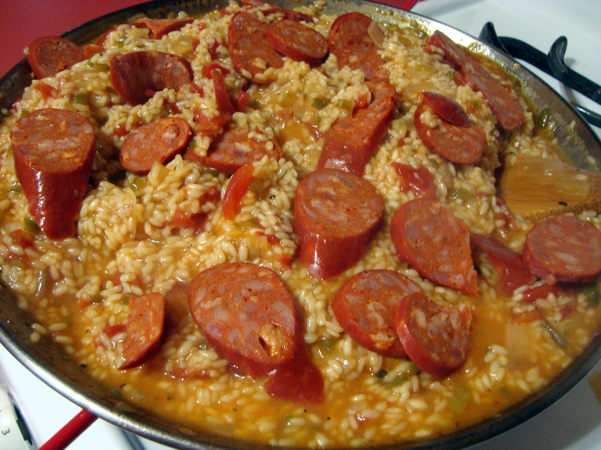

Paella

My intention with this recipe is to make a paella that is as offensive to the original recipe as possible.
Disclaimer: if you invite your valencian friend to try it, they might take violent action against you.
Ingredients
- Whole-grain rice
- Chicken
- Shrimp
- Green beans
- Red pepper
- Onion
- Garlic
- Chorizo (Typical spanish sausage made of pork and pimenton)
- Pimenton (Typical spanish condiment made of powdered pepper)
- Artificial food coloring (Do not use saffron)
Steps
- Chop the onion and the garlic
- Chop the red pepper
- Chop the chorizo
- Chop the chicken
- Chop the green beans
- Put the onion and the garlic in a pan with olive oil
- When the onion is golden, add the red pepper
- When the red pepper is soft, add the chorizo
- When the chorizo is cooked, add the chicken
- When the chicken is cooked, add the green beans
- When the green beans are soft, add the rice
- When the rice is golden, add the pimenton
- Add water until it covers the rice
- Add the food coloring
- Let it cook until the rice is soft, but do not let it stick to the pan
valencians call this "socarrat". Avoid this when possible since you will be
essentially burning your food and adding carcinogens to it (I guess, wtf do I know xD)
- Enjoy!